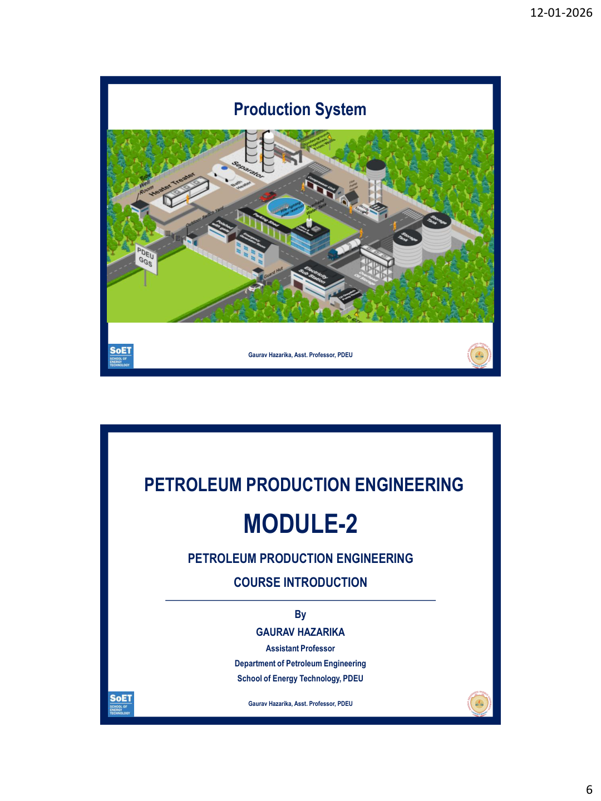
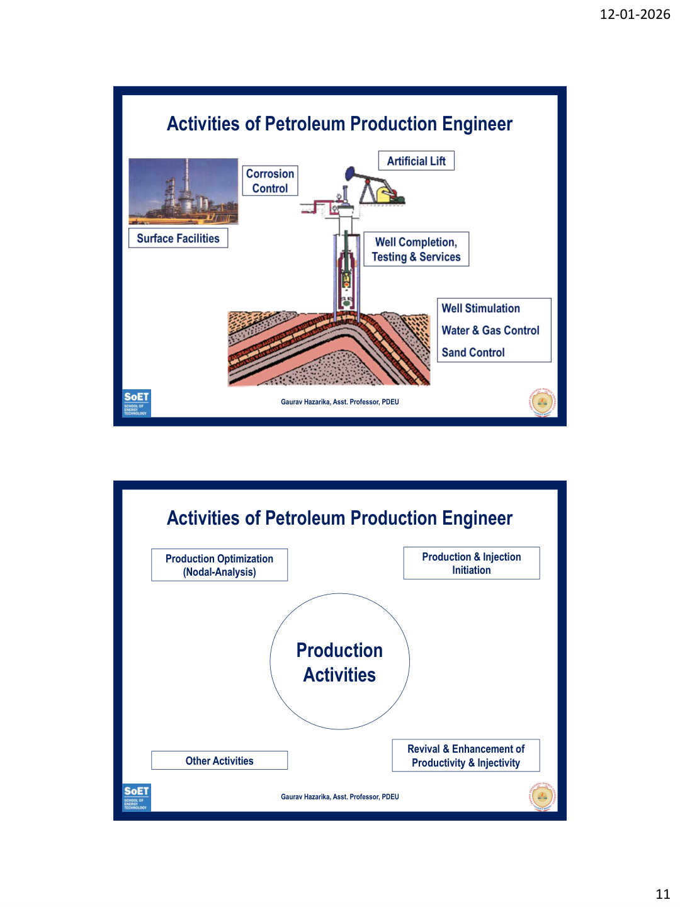
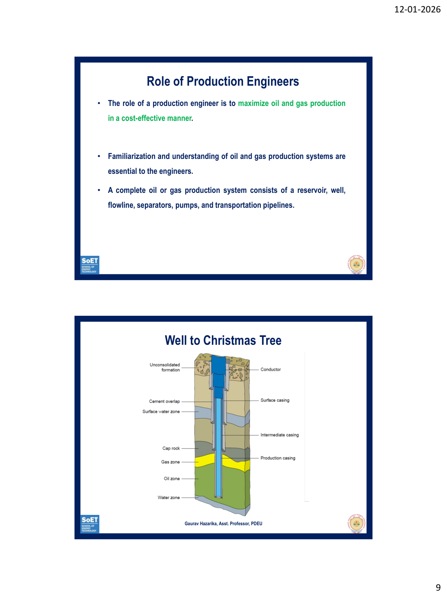
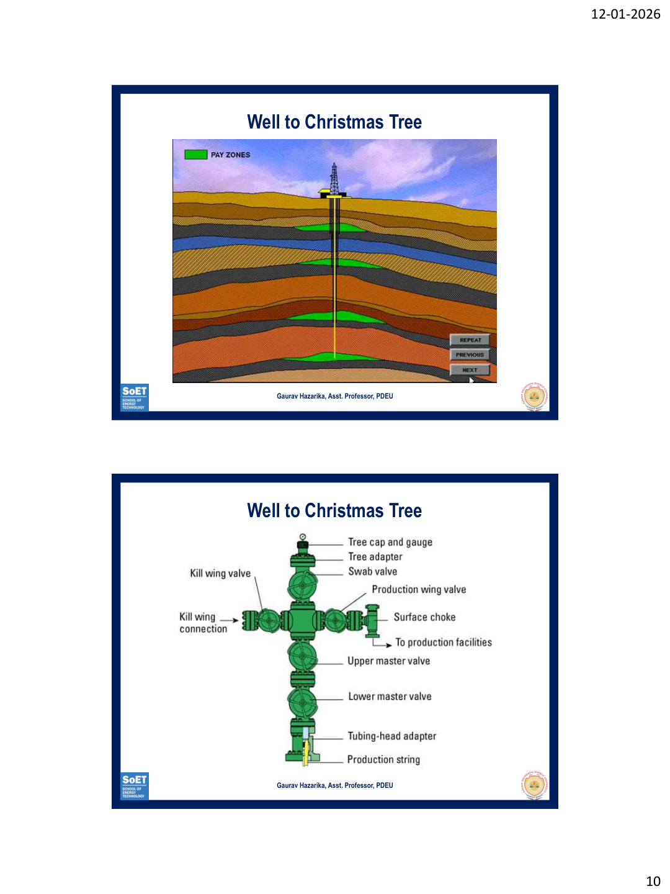

Petroleum Production Engineering – Surface Facilities & Role of Engineers
All 4 "Test Your Understanding" questions come directly from these topics.
The Production System is the complete system that transports reservoir fluids from the subsurface reservoir to the surface, processes and treats the fluids, and prepares them for storage and transport to a purchaser / sales point / refinery.

The group gathering system consists of flow lines from well(s) to a centralized Group Gathering Station (GGS). Two types:
A gathering system collects produced fluids from individual wells and brings them to a central processing facility (GGS). It consists of flowlines, headers, and trunk lines.
Add a line: "The choice of gathering system depends on the field geometry, number of wells, terrain, and economic considerations. In modern fields, a hybrid system combining both radial and axial principles is often employed."
A Production Engineer's primary role is to maximize oil and gas production in a cost-effective manner. They must have thorough understanding of the entire petroleum production system.
1. Production Optimization (Nodal Analysis)
2. Production & Injection Initiation
3. Revival & Enhancement of Productivity
4. Other Activities

Conclude with: "Modern petroleum production engineering is inherently multidisciplinary. The production engineer acts as the integrator, coordinating with all disciplines to ensure the seamless and safe production of hydrocarbons from reservoir to surface."
The wellhead is the surface equipment at the top of a well that provides the structural and pressure-containing interface for the drilling and production equipment. It supports the casing strings and controls pressure.
The Christmas Tree (Xmas Tree) is the assembly of valves, spools, and fittings connected to the top of the wellhead. It controls the flow of wellbore fluids and provides access to the tubing.

